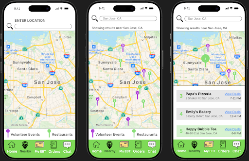
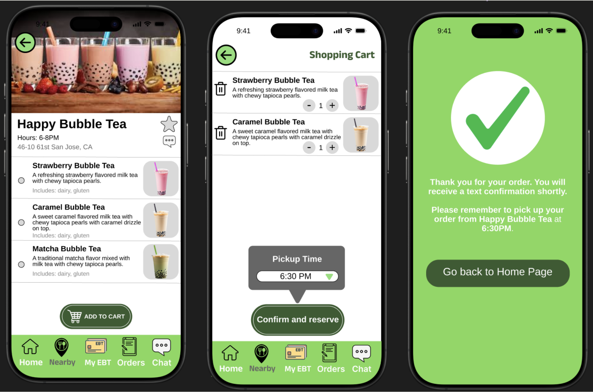
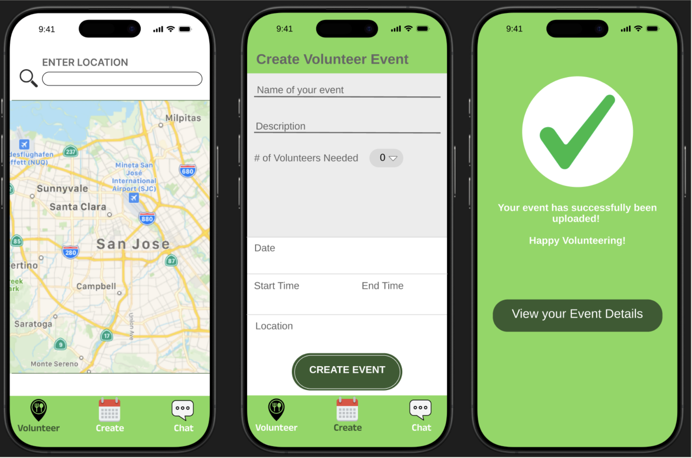
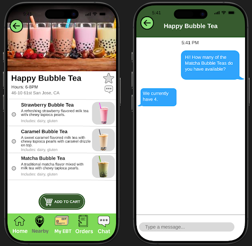

After receiving feedback about our design layout, we started a high fidelity prototype. The engine we used to design and generate these sketches are all created in Figma.
This task guides users through discovering local food providers and events using a location-based map interface. The experience includes viewing nearby pins, filtering by categories (restaurants or volunteer events), and reviewing available deals in a list view for quick access.
 This task enables users (such as community leaders or business owners) to create food-sharing or volunteer events. The form is optimized for mobile input and includes fields for name, time, date, location, and number of volunteers needed. A success message is displayed after submission.
This task shows a user using the in-app chat feature to ask a food provider about current availability. This enhances trust, facilitates real-time coordination, and reduces uncertainty for both the provider and the user.
